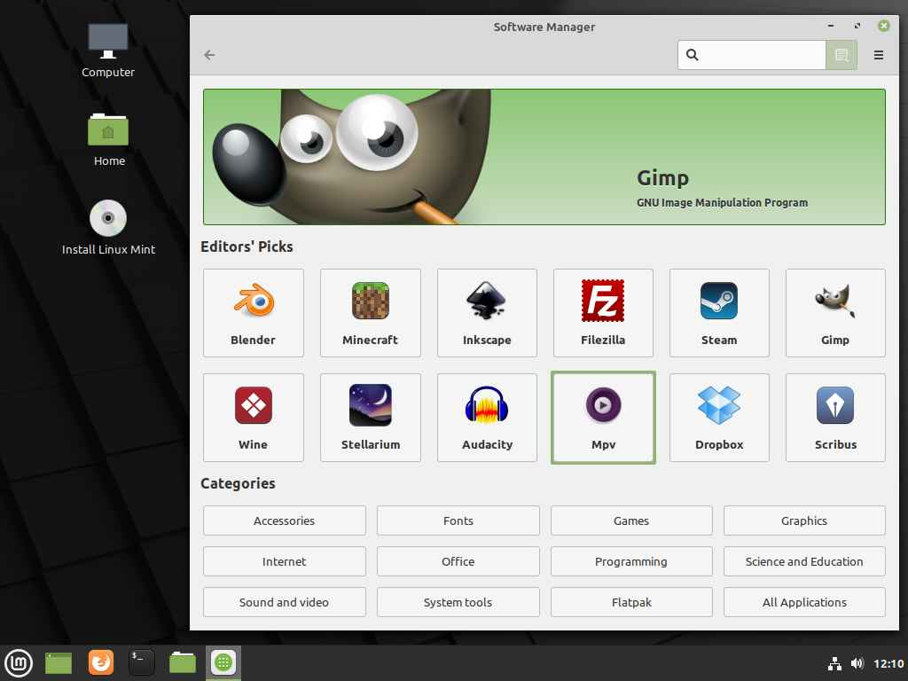
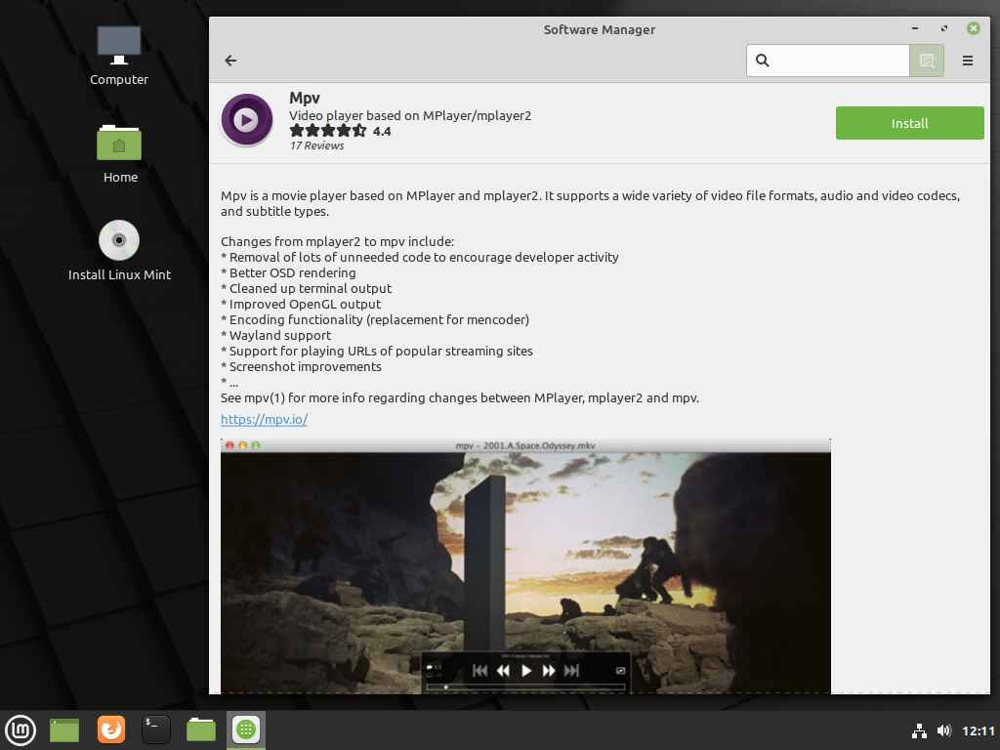

Migrando para sistemas FOSS
Este foi um texto que eu escrevi pouco depois da faculdade e nele eu (destilei meu ódio) escrevi tudo que eu percebi de incongruência com o público de afegão médio usuário de Windows/Mac na maneira que eles interpretavam como era a situação de um usuário de softwares livres, é apenas ração pra pensamento e creio que jamais vai ficar pronto. Peço que você não simplesmente engula ou rejeite o que está escrito aqui pois é mais para gerar um contexto e iniciar uma conversa mesmo.
Introdução - Aperte F11
Como entusiasta de computação e, em especial, sistemas operacionais, me incomoda o fato de que a grande maioria dos computadores pessoais que já vi utilizam ambientes defasados, inseguros e em alguns casos até mesmo incompatíveis com as capacidades do hardware quase sempre por causa do usuário final não experimentar ou mesmo desconhecer alternativas (sendo que muitas vezes estas são melhores que aquelas sendo utilizadas) ou mesmo desconhece o básico do básico do que é a computação. É cada vez mais comum perceber pessoas que utilizam o computador para tarefas básicas (como por exemplo edição de texto e navegação em mídias sociais) rodando alguma versão modificada do Windows 7, geralmente baixado em sites do tipo do RatonDownloads ou PHDowns, e instalada pelo técnico com o serviço mais barato que cobra menos de 100 reais para não fazer nada além de clonar uma imagem de disco para o HD com o argumento de que "utiliza isso pois máquina em uso já não suporta mais o novo Windows 10"... As vezes é até pior: Pessoas que utilizam uma suposta versão "atualizada" do Windows XP que supostamente foi modificada para melhor desempenho (obviamente não pelas mãos da Microsoft ou nenhuma fonte confiável)...
Você não precisa fazer benchmarks em sistemas de arquivos, pentesting ou curso, ou nenum tipo de especialização em computadores para entender um básico do risco que corre ou mesmo do que deixa de ganhar passando por esse tipo de situação, e ao meu ver disseminar tal conhecimento é necessário... Mas como nunca encontrei nada que julguei como suficientemente direto resolvi eu mesmo fazer esse texto.
Meu objetivo com esta página é municiar você com um básico de conhecimento em computação, especialmente em sistemas operacionais, para que você não precise correr risco ou ter que pagar 50 reais todo mês para que algum maluco pouco menos leigo que você reinstale um sistema que no melhor dos casos seu computador simplesmente não vai dar conta de rodar ou pior ainda, um sistema sabidamente perigoso de se usar.
Vamos começar?
A primeira coisa que eu te peço é que visite essa página:
Microsoft Windows StoreVisitou? Mesmo? Ótimo! A primeira coisa que eu quero que você tenha em mente é que o Windows é um sistema operacional que é propriedade da Microsoft, é um sistema operacional de código fechado (já explico o significado disso um pouco mais abaixo) e pago... Sim, o Windows não é de graça e a licença dele está longe de ser os míseros 50 reais que você paga para o "Junin sobrinho da Neiva" instalar ele no seu computador.
Via de regra, se:
O seu computador não veio com o Windows instalado e permaneceu sem ser formatado;
Você não baixou o Windows diretamente do site da Microsoft e comprou a licença também diretamente do site da Microsoft;
Você não atualizou de uma versão antiga do Windows que veio previamente instalada e/ou adquiriu uma licença especial (da empresa, para estudantes etc.)
Você não só está cometendo pirataria de software como corre diversos riscos de segurança.
Inclusive eu sei que sempre tem aquele metido a espertão que vai dizer "ah mas a Microsoft nunca vai vir atrás de mim" ou "ah mas eu comprei a licença de 20 reais no MercadoLivre e tá funcionando" ou mesmo "só usar um KMS e tá resolvido"... E pra você que é esse espertão eu tenho uma novidade: Você está usando de um simples recurso de pirataria e não uma varinha mágica do Harry Potter, no mundo da computação não tem magia e não tem atalho! Nada do que você fizer para burlar isso vai ser muito produtivo, seguro ou mesmo difícil de perceber, simples assim.
Esse problema vai muito além de "ser um pirateiro", mas para que você entenda o problema é necessário esclarecer algumas coisas antes:
A primeira delas é que crackear um sistema é uma tarefa difícil, e você pode ter certeza que ninguém vai fazer isso de graça, e se você vai usar uma ferramenta de ativação do seu Windows... Você sabe EXATAMENTE o que tem no código daquela ferramenta? Você confia em um programa que tem acesso tão íntimo ao seu sistema que o engana a ponto de falsear uma ativação?
Ao meu ver isso seria tão idiota como passar a chave da sua casa pro maior traficante da cidade e pedir que ele tome conta das suas coisas... Se alguém tem tamanho controle do seu sistema, o que te garante que essa pessoa não vai usar isso contra você?
Você acha MESMO que alguém passou horas e horas quebrando a segurança do Windows e disponibilizou esse recurso de graça e sem absolutamente nenhuma intenção de ganho? E em papai noel, você acredita também?
Aliás é importante dizer que você não removeu o controle da Microsoft do seu sistema, muito pelo contrário você apenas adicionou o acesso de uma ferramenta, bastante suspeita, provavelmente feita por algum indiano ou russo aleatório em nome da conveniência para que alheios não tenham que garantir o bom funcionamento do sistema de acordo com o seu proprietário e esperando que isso não tenha nenhuma ramificação negativa para você... Uau... Parabéns por chegar na vida adulta com essa ingenuidade!
Ah, e com relação as licenças de "vintão" do MercadoLivre, tem um motivo delas serem "vintão" e tenha absoluta certeza que não é pelo fato daquele seu vendedor no MercadoLivre ter uma habilidade de negociação impar, se aquele cara não está cobrando o devido valor da licença que a própria Microsoft cobra, é certo que ele também não está repassando o devido valor para a Microsoft, em resumo: Ele certamente conseguiu isso cometendo um crime. Seja por comprar licenças diferentes daquela para usuário final (exemplo: revender ilegalmente licenças compradas em bloco por alguma faculdade ou empresa) ou mesmo comprando a licença com cartões clonados ou sustando a compra depois de ter recebido a licença... E Você se torna cúmplice ou no mínimo receptor de produto de furto.
Entenda: Se o Windows está mostrando que o seu sistema está ativado, não é prova suficiente de que você tem uma licença válida! Se você comprou uma licença que foi vendida como parte de um bloco de licenças para uma empresa ou mesmo vendidas em bloco para estudantes de uma faculdade e que você não faz parte, o seu Windows estará ativado mas a sua licença não é válida!
"Ah, mas isso não tem problema né?"
Será?
Aqui vai uma noção básica de computação que você precisa aprender: Softwares (programas) são 50% código e 50% licença de uso. Em outras palavras o programa é parte o que funciona na sua máquina e a outra parte é sobre seus direitos e deveres ao utilizar aquilo em sua máquina.
Se você quer utilizar o Windows, ele tem dono e eu verdadeiramente recomendo você utilizar da maneira que a Microsoft exige, e mesmo que seja pra tentar tirar uma vantagem saiba que não existe atalho que não te deixe a mercê de terceiros, seja com suas informações (comprando produto de crime) ou pelo acesso na sua máquina (usando ferramentas para crackear o sistema).
A Licença do Windows
Tá, já entendi que eu não devo comprar licença roubada ou instalar vírus no meu computador, mas se eu quiser comprar a licença como é essa licença da Microsoft? O que ela exige nessa licença?
Bom, se você quer ir no site e ver como tá, o link é esse:
Termos de Uso do WindowsMas vamos analisar alguns pontos descritos aí:
Ao aceitar este contrato ou usar o software, você concorda com todos estes termos e aprova a transmissão de determinadas informações durante a ativação e o uso do software de acordo com a política de privacidade descrita na Seção 3. Se você não aceitar e não cumprir estes termos, não poderá usar o software nem seus recursos.
...Alguns aplicativos do Windows fornecem um ponto de acesso para serviços online ou que se baseiam neles...
...A Microsoft, o fabricante ou instalador também poderá incluir outros aplicativos...
...O software é licenciado, não vendido...
...Concedemos a você o direito de instalar e executar uma instância do software em seu dispositivo (o dispositivo licenciado), para uso por apenas uma pessoa por vez, desde que você cumpra todos os termos deste contrato...
...esta licença veta e não lhe concede nenhum direito de: contornar quaisquer restrições ou limitações técnicas do software;
...fazer engenharia reversa, descompilar nem desmontar o software ou de outra forma tentar fazê-lo, exceto e somente até a extensão da restrição expressa anteriormente é (a) permitido pela lei aplicável; (b) permitido pelos termos de licenciamento que regem o uso dos componentes de software livre que podem ser incluídos no software ou (c) exigido para depurar alterações em quaisquer bibliotecas licenciadas por meio da Licença Pública Genérica Inferior que estão incluídas nela e vinculadas a ela pelo software...
Bom, ao menos até onde eu sei estudar funcionamento de código é uma atividade permitida por lei.. Será que a Microsoft sabe disso ou só está sendo canalha? Eu vou deixar que você tire as suas conclusões... Mas continuando:
Se, ao adquirir o software, você recebeu várias versões (como versões de 32 bits e 64 bits), poderá instalar e ativar apenas uma dessas versões por vez.
Alguns recursos do software, ao serem usados, enviam ou recebem informações. É possível desativar muitos desses recursos (não todos?) na interface do usuário ou optar por não usá-los. Ao aceitar este contrato e usar o software, você concorda que a Microsoft poderá coletar, usar e divulgar as informações...
O software verifica periodicamente a existência de atualizações do sistema ou dos aplicativos e as baixa e as instala. Você poderá obter atualizações somente da Microsoft ou de fontes autorizadas, e é possível que a Microsoft precise atualizar o sistema para fornecer essas atualizações. Ao aceitar este contrato, você concorda em receber esses tipos de atualizações automáticas sem nenhuma notificação adicional.
Então quer dizer que a Microsoft se coloca no direito de ignorar seja lá o que eu esteja fazendo e atualizar a minha máquina sem sequer me dar o direito de ser informado? Entendi...
Arbitragem Legal e Renúncia a Ações Coletivas Se você morar nos Estados Unidos ou, no caso de uma empresa, sua sede for nos Estados Unidos.
Esperamos que nunca haja controvérsias, mas, se houver, você e nós concordamos em tentar resolvê-las informalmente por 60 dias. Se não conseguirmos, você e nós concordamos com a arbitragem individual legal perante a Associação Americana de Arbitragem (“AAA”) de acordo com a Lei de Arbitragem Federal (Federal Arbitration Act) (“FAA”) e não mover uma ação em um tribunal perante um juiz ou um júri. Um árbitro neutro tomará a decisão, e esta será definitiva exceto por um direito limitado de apelação previsto na FAA. Não são permitidas ações e arbitragens coletivas, ações gerais com advogado particular e outros processos nos quais um indivíduo atue com uma função representativa. Também são proibidos processos individuais sem o consentimento de todas as partes. “Nós” e “nosso” incluem a Microsoft, o fabricante de dispositivo e o instalador de software.
Qual será a razão da Microsoft prever que pode ocorrer alguma controvérsia nos Estados Unidos e querer se manter livre de uma ação coletiva? Será que é pelo Patriot Act que permite que a NSA espione todo mundo? Não sei, é um mistério para o Scooby Doo mesmo...
E aí? É o suficiente pra te deixar de cabelo em pé? Espero que sim. Então vamos recapitular:
-
O sistema que você usa não é seu e você pagou por permitir que a Microsoft te deixe usar;
-
Segundo a Microsoft você não pode modificá-lo ou estudá-lo, Ainda que essas sejam atividades permitidas por lei;
-
A Microsoft pode a qualquer momento ter acesso as informações no teu dispositivo (traduzindo: seus dados);
-
Você pode não se isentar de acesso externo, seja da Microsoft ou do fabricante do seu computador que tem um contrato com a Microsoft;
-
A Microsoft tem o direito de instalar atualizações sem precisar te notificar;
-
E caso a Microsoft seja pega fazendo alguma sujeira vai ser o seu advogado contra o time de advogados da Microsoft.
E mesmo assim, com tudo isso você ainda quer instalar uma ferramenta bem suspeita para modificar o seu sistema ou comprar uma chave roubada para deixar o seu Windows ativado? Entendi...
Então, para que fique claro: Eu não sou nenhum hater da Microsoft, tá? Essa página foi feita e mantida graças a ferramentas da Microsoft (Github e VSCode), eu sou fã de Halo e acho o Xbox a melhor plataforma para quem só quer jogar videogame (sim, ao meu ver é superior até mesmo ao pc para usuário final que só quer jogar) e é exatamente por isso que eu peço que se você for utilizar o Windows utilize a versão mais nova, baixada do site da Microsoft e sem uso de nenhum ativador ou chave pirata.
E se não for nessas condições? Anote: você não deveria estar usando Windows! Simples assim. Um sistema que perdeu o suporte base não é uma "alternativa" para o Windows 10, Windows 7 já morreu! (Windows XP então nem se fala...) E o Windows 10 do Raton/PHDowns pré-ativado não é alternativa para o Windows baixado do site da Microsoft só porque você não quer enfrentar a porcaria de uma marca d'água no canto inferior da tela porque acha ruim o dono do software cobrar você para que o utilize de maneira honesta, você é adulto e deveria ter em mente que coisas assim tem consequências. Em resumo: Não cometa crime de pirataria se você não precisa mas se vai usar Windows, baixe do site de Microsoft o Windows 10, instale em um computador que respeite os requisitos recomendados (pelo menos um E8500 de processador, 4Gb de ram, ssd já que Windows não funciona bem hoje em dia com HD) do contrário se você não depende de um software específico que só tem para Windows ou seu computador não da conta de rodar ele liso não use.
Ah, mas então você quer saber o que vai usar se não for Windows com Microsoft Office? Eu te digo...
Diferenças Fundamentais - Introdução
Isso não deveria ser novidade para nenhum ser humano nesse mundo em pleno 2021 mas é óbvio que computadores existiam muito antes do Windows ser criado e não existe só Windows de sistema operacional nesse mundo. Você poderia utilizar um Mac ou uma Android Box com mouse e teclado, ah deixa eu adivinhar: Você não tem dinheiro para comprar um Mac e se não entende de pc laptop/desktop entende menos ainda de Android box? Tá, eu tenho uma solução pra você que é de graça mas como todo bom brasileiro mal acostumado com nunca ter que aprender nada de computação eu já sei que ainda assim você vai reclamar.
Você deveria considerar o uso de sistemas baseados em Linux OU BSD mas eu já sei que você "não acha que vai acostumar" ou o velho "não gostei do Linux porque eu usei na escola ou num pc da Positivo"... Até porque tudo que é feito pelo governo ou colocado num computador por uma marca brasileira que só quer reduzir custos é certamente o melhor exemplar de sistema livre que existe né?
Então deixa eu te contar um segredinho: Fora o seu computador da Xuxa, basicamente tudo nesse mundo utiliza essas tecnologias. Nintendo Switch? FreeBSD. Playstation 5? Também. Servidores Azure da Microsoft? Linux Sphere OS (sim, os servidores da Microsoft rodam Linux). O roteador da sua casa também roda alguma versão de Linux e se você utiliza Android ele por si só é um projeto de código aberto bastante baseado em Linux e se você utiliza iOS muito do que ele é hoje se deve ao código emprestado do FreeBSD.
Sem contar que existem diversos problemas que você já se acostumou que simplesmente não existem nesses sistemas, o primeiro deles é a licença de uso, Linux e BSD não são só gratuitos, eles são livres, e você faz deles o que quiser. o Segundo é a leveza, o Windows é um sistema pesado por natureza, quantas vezes a barra de tarefas simplesmente parou de responder ou o seu hd estava com 100% de uso sem nenhuma razão aparente? Enquanto que com um Linux ou BSD é possível fazer um sistema rodar muito bem numa máquina de 20 anos atrás, esses sistemas são conhecidos por ressucitarem máquinas em que rodar Windows se tornou impossível, você não precisa clicar em 1001 caixas de diálogo inúteis que a Microsoft joga na sua cara e você não vai precisar se preocupar com atualizações enfiadas goela abaixo, pois estes são sistemas que colocam você no controle da sua máquina. Te parece um pouco mais interessante agora né? Ter seu pc de batata rodando 100% sem atualização forçada, inúmeras caixas de diálogo e sem ter que piratear nada, né?
Meu ponto não é ser nenhum "testemunha de foss" e catequizar ninguém ou forçar ninguém a nada a usar nada, meu ponto é que na grande maioria dos casos você não precisa ser um pirateiro babaca se quiser ter um computador que funcione pra tarefas básicas e menos ainda ser um adulto que se sente confiável ao usar um sistema todo modificado que já vem com vulnerabilidades que permitem o controle da sua máquina e roubo dos seus dados (aaaah você achou mesmo que aquele ativador que você usa feito por algum anônimo só ativa o Windows?😂).
Para não ficar batendo nessa tecla de insegurança e pirataria, saiba que existem milhares de distribuições de Linux e BSD por aí, e provavelmente alguma delas vai te atender muito melhor que Windows em alguma coisa e o que eu espero que você faça é que ao menos experimente não depender do Windows. Existem motivos legítimos para utilizar um Windows baixado do site da Microsoft, que não foi ativado e que roda em uma máquina parruda (como por exemplo um pc para jogos de alguma criança), agora se você é adulto e usa Windows numa máquina só pra aplicativos de escritório e mídias sociais, maquina essa que não aguenta ou utiliza algum ativador e nunca teve a decência de experimentar deixar de depender disso, o nome disso é burrice mesmo.
Diferenças Fundamentais I - Conceito
Linux e BSDs Não são Windows! Se você é um usuário de Windows e senta em frente a um computador com Linux/BSD e espera que ele funcione, pareça e opere como o Windows você vai ficar bastante frustrado. E a maioria dos problemas de quem tem contato com o Linux/BSD pela primeira vez é isso: Ter a expectativa todos os sistemas da face da terra funcionem igual o Windows.
Tem um certo tipo de usuário que realmente não vai lidar bem com o Linux/BSD, e esse usuário é aquele usuário que sempre usou o computador desde o DOS 1 da mesma forma e sabe tudo a respeito de como fazer as coisas da maneira que ele sempre fez, o típico indivíduo que não aprendeu nada de computadores e só entende de utilizar sistema operacional da mesma forma, se você utiliza Linux/BSD você deve utilizá-los nos próprios termos a nas próprias metodologias, você não deve esperar utilizá-los igual o que você estava acostumado.
Estes são sistemas diferentes, baseados numa outra filosofia de computação.
Linux/BSD não são produtos, são esforços de uma comunidade, eles podem te levar para onde você quiser desde que você entenda que não se trata de uma simples carona e sim de uma jornada. O progresso desses sistemas não está baseado em quanto lucro uma empresa pode fazer e sim na contribuição consciente de diversos membros e empresas que o adotam. Se você tiver algum problema ou crítica, especialmente se vem do Windows/MAC informe a comunidade para que ela solucione o seu problema (coisa que você jamais vai ter utilizando o seu Windows piratão), e lembre-se de agradecer pelo esforço.
Se você aproxima estes sistemas com uma mentalidade de "essa porcaria não funciona" e "nossa, não faz o menor sentido", saiba que existem razões éticas e técnicas para se utilizar FOSS, portanto não aponte como o sistema deveria ser se você sequer teve a humildade de entender o sistema, você deve entender que isso é desenvolvido pela comunidade e para a comunidade e não é pra um bando de vagabundo tentando rodar o League of Legends sem ter que pagar a licença do Windows.
É perfeitamente natural ter dúvidas num processo de mudança, mas a presunção é condenável. Se você é daqueles que diz que "Linux é ruim", "prefiro o Mac que não trava", "não tem o programa que eu preciso pra Linux" quando não se trata de algum software para trabalho ou fala qualquer variação disso saiba que para quem entende um mínimo de sistemas isso soa como um atestado de burrice. Sabemos que essas conclusões vem de um estado mental do tipo de pessoa que nunca leu um manual na vida, que se sente confortável em fazer alegações sem nunca sequer ter feito um misero teste, do tipo de pessoa que se limita ao que vê e a menos que você seja um privilegiado que veja pulsos elétricos e consiga compreendê-los (se for este o caso saiba que eu o invejo fortemente) você resumiu toda a sua experiência com o computador apenas no que viu na tela e apenas o comparou com o que fez da mesma forma a vida toda, você é exatamente o tipo de pessoa que não deve ser parâmetro para o termo "experiência de usuário".
E aqui vai uma dica preciosa para deixar de lado essa dependência babaca: Os sistemas FOSS, seja ele baseado Linux ou BSD pode atender as suas necessidades, mas não da pra te ensinar como fazer aquilo que você presumiu ser a maneira que deve ser feito.
Se você não faz no Linux/BSD algo da mesma maneira que fazia no Windows não quer dizer que a sua necessidade de uso do computador não pode ser atendida, e se você não sabe como fazer algo ainda não significa que não há como fazer ou que você va ter problemas para aprender, mas se uma pesquisa no Google redirecionando para o vivaolinux.com.br é difícil demais pra você, provavelmente aprender como se utiliza um sistema é a menor das suas prioridades...
Não tem como repetir isso o suficiente mas é absurdo o quanto eu vejo pessoas quebrando a cabeça com o Linux/BSD por se limitarem a fazer exatamente o mesmo que faziam no Windows quando já tem até video no canal Diolinux explicando como da pra ser feito. Cada usuário tem seus gostos e preferências e é tua responsabilidade lidar com isso, e a pior maneira de lidar é se entorpecer e se limitar a nunca mais aprender nada de novo. É querer uma maneira engessada de funcionamento de sistema e não se abrir a novas ideias (aliás computadores são dinâmicos e essa opção de utilizar o sistema absolutamente da mesma forma não existe, você só não se deu conta disso ainda... Aliás abraço pra você que reclama da adaptação no Linux ou BSD e apanhou feito mulher de malandro pro tile menu do Windows 10). No fim do dia é uma questão de atitude, se você se acha bom demais pra respeitar uma licença e também se acha bom demais para aprender algo novo, se você não aceita que é uma curva de aprendizado e que assim como tudo na vida se requer esforço e tempo e que não vai ser tudo entregue pra você de mão beijada na primeira vez que utilizar o sistema, você vai ter problemas com qualquer coisa que não faça parte do seu processo de zumbificação de como usar o computador e não só em utilizar Linux ou BSD.
Pessoas que lidam bem com o Linux/BSD são aquelas que sabem de que se trata de uma jornada e não de um destino. São aquelas que tem interesse em saber o que devem aprender e que tem a humildade de começar do 0, e as vezes, ir devagar é a melhor opção. Em todos os casos na minha vida em que pude atestar a primeira experiência de alguém que se inicia na computação, sem vicios, a experiência com sistemas livres obviamente é muito mais agradável e simples do que com Windows e isso não é novidade para nenhum professor da área da computação. Mas pessoas que já estão a 10 anos utilizando computador e conhecem apenas 1 conceito de sistema operacional? Bom... Eu só lamento.
Não é culpa do sistema não fazer algo se você sequer sabe operá-lo. Se você está encarando algo que não entende, use o Google! Se um engenheiro de software fez o código do sistema dessa forma, não assuma que você com seus 10 anos de clicar em [next >] [next >] [next >] é maior conhecedor de como computadores devem funcionar.
Infelizmente aqui no Brasil o primeiro contato que as pessoas tiveram com o Linux foi a porcaria do Linux Educacional (que como tudo que vem do governo é excelente né?) e o famigerado "Linux da Positivo", deveria ser óbvio mas estes não representam as distribuições Linux de forma alguma, se você julga o sistema baseado nessas interações ou na sua incapacidade de fazer no Linux/BSD exatamente a mesma coisa da mesma forma saiba que em partes a sua mentalidade é parte do problema.
Certo tempo atrás, numa das conversas com o pessoal que eu encontrava depois da faculdade um dos colegas reparou o meu modesto dual core (a porcaria de um AMD Temash... Não me julgue, ao menos minha faculdade tá paga) de 13 polegadas e perguntou:
- Isso é linux?
Eu respondi que sim.
- Pq vc usa isso? Eu não consigo ser early adopter de nada...
Eu pensei em diversas coisas que poderia responder naquele momento, mas a primeira coisa que respondi é:
Porque é o melhor.
E você pode achar que eu sou alguma espécie de fanboy por dizer isso mas lembre-se: Eu estava na faculdade, eu só precisava editar código e eu tinha um AMD Temash de 2gb de ram e 13 polegadas... Eu posso te falar com a mais absoluta certeza que nenhum Windows rodaria melhor pois eu testei todos!
Como eu mesmo costumo dizer, não existe nada que é apenas "melhor" quando falamos de computação (talvez eu abra uma exceção pra ZFS...), mas sei que minha resposta soa quase que como uma provocação pra esse tipo de mentalidade. Eu não faço questão de manter em segredo que a opção FOSS via de regra será a minha preferida (raríssimas exceções), mas é compreensível que Linux/BSD é o pior tipo de sistema para um certo tipo de usuário e até impressione alguém ao dizer que sim, Linux era de longe a melhor opção para se utilizar naquele laptop! Mas especialmente naquele hadrware se ele é visto como o melhor ou é o pior pelo usuário final tende a ser muito mais uma questão do tipo de pessoa que o utiliza do que uma questão técnica (que foi o meu caso), e eu entendo que não da pra se fazer julgamento do produto com base nos usuários mas uma das coisas mais fundamentais que você adquire com Linux/BSD também é uma das principais razões das pessoas se contorcerem e se agoniarem ao encará-lo: Você tem opções! Você não vai depender de alguém te dizer o que você é obrigado a ter no seu computador.
E para algumas pessoas isso é um dealbreaker, algumas pessoas infelizmente tem a mente institucionalizada e dependem de alguém para mandar o que elas devem utilizar.
Aliás se você não ouviu esse termo anteriormente, é um termo bastante utilizado para descrever prisioneiros (lembre-se disso) quando você é encarcerado obviamente você é separado das suas liberdades, mas a raiz do significado disso é que você é separado da sua responsabilidade e da habilidade de fazer decisões por si mesmo: Um prisioneiro não decide quando come ou o que come, os oficiais decidem isso, um prisioneiro também não precisa se preocupar se ele terá o dinheiro para comprar o seu alimento, diferente de uma pessoa livre, uma pessoa livre compra o seu próprio prato, ela tem que comprar mantimentos ou voluntariamente firmar um acordo e pagar para que alguém faça a sua comida.
Talvez um prisioneiro se preocupe com coisas pontuais, mas ele tem uma certa base de garantias que ele troca em nome da liberdade, ele tem um lugar pra dormir (ainda que seja uma cela), e quando pessoas passam anos ou décadas sem a necessidade de se tomar uma decisão e sem ter que ser responsável pelas suas atitudes eles começam a encontrar um certo conforto nisso, um exemplo histórico brasileiro interessante para se comparar é o tipo do conforto dos escravos que passaram a ser um capitão do mato.
Essa mentalidade de escravo se resume a proteger o que é familiar proteger o que você conhece, se você vem sendo um escravo por toda a vida ao menos você tem uma senzala pra dormir e você pode comer as mesmas mangas de sempre vez ou outra e ver essa garantia de estilo de vida (mesmo que seja a garantia de uma vida de merda) como algo melhor do que o caótico e desconhecido leque de opções que uma tentativa de vida livre pode trazer.
Se você é livre, é basicamente uma responsabilidade sua arcar com os resultados do que faz, seja para tentar fugir ou compilar um Funtoo e fazer aquele antigo pc 486 funcionar e assim como talvez um escravo possa ser pego, talvez você quebre a sua tabela de partições e perca todos os seus dados.
Utilizar computadores hoje em dia se tornou uma forma de escravidão: É meio que esperado que todo mundo pague algum técnico meia boca para instalar o seu sistema, que utilize um Windows pirata ativado com KMS e desatualizado, que só edite textos através do Office crackeado, que se acostume a nunca mudar seu workflow ou personalize a sua área de trabalho... E muito antes de eu sequer entrar numa faculdade de computação eu sempre preferi instalar o sistema por conta própia pois eu não confiava nos técnicos da minha região (e aliás eu sei que você também desconfia dos técnicos da sua região), eu sempre gostei de personalizar a interface do sistema com temas customizados (abraços pra você que lembra das skins do Winamp), personalizar a tela de login, personalizar os sons do sistema e se algum software era pesado demais ou simplesmente me enchia o saco com caixas de diálogo desnecessárias eu simplesmente o desinstalava! Eu sempre busquei alternativas de software e otimização do meu workflow muito antes de migrar para o Linux, e hoje me parece que quanto mais tempo se passa mais escravas as pessoas se tornam de um caso de uso específico. Por incrível que pareça quanto mais as pessoas de hoje usam o computador menos elas etendem de computador e mais elas dependem do sistema.
Obviamente ao meu ver isso é uma espécie de escravidão: Porque diabos se tornou estranho EU instalar o meu sistema e usar o MEU computador da forma que EU gosto? 😐 Porque as pessoas preferem utilizar o computador DELAS da forma que TODO MUNDO usa? 😐 Como diabos um ser humano pode utilizar uma ferramenta por uma década sem melhorar uma iota na utilização dessa ferramenta? 😐
Chegou ao absurdo de que com a popularização do Linux as pessoas pensam em migrar cada vez mais porém tem sempre aquele indivíduo que vem com perguntas do tipo "qual é a melhor distribuição Linux?" ou "que programa pra baixar torrent eu tenho que usar?", o mesmo tipo de coisa que você vê no autocompletar do Google. Como eu sou do tipo de pessoa que precisa de um motivo para alguma resposta e não quero alguém me apontando o workflow específico, eu espero ao menos uma dissertação básica dos motivos que levam alguém a escolher uma opção "este é melhor que aquele" ou "eu uso esse", percebo que sempre que eu respondo de uma maneira que EU gostaria de ouvir, essas pessoas geralmente me retrucam com algo do tipo "ah mas eu não sou formado" ou "ah mas isso é fácil pra você" ou "ah mas todo mundo usa esse", como se a pessoa tivesse que ser programada pra usar algo, como se ela fosse incapaz de tomar as próprias decisões.
Tudo depende do que você quer fazer, como quer fazer, por qual motivo quer fazer, e eu acho absurdo quando o "eu não consegui migrar para o Linux/BSD" se resume em "a interface do LibreOffice é diferente e eu não achei botãozinho igualzinho tava no Windows". Gente que já está na faculdade e que te responde de uma maneira que em qualquer outro assunto seria motivo de se envergonhar mas tá tudo bem ser bitolado assim com computadores, que está tudo bem pois "eu não sou formado em computação".
Eu já perdi as contas de quantas vezes cheguei em alguém e falei algo tipo "você sabia que utilizar esse µTorrent crackeado é altamente inseguro? Se você só utiliza ele para baixar torrents porque você não utiliza Transmission, qBittorrent ou Deluge?" ou "Escuta, se o seu computador tá travando com o Office porque você não usa o Google docs pra fazer seu TCC ao invés de instalar uma versão crackeada já que você só utiliza o Word pra digitar texto?" e a pessoa simplesmente congela na minha frente por não ter a mais puta ideia, ela da tela azul igual o Windows pois eu a condenei com o fardo de ter que pensar na responsabilidade que ela tem ao utilizar o computador. Eu entendo você usar um app por alguma função especifica, eu entendo você TER que utilizar o Adobe Photoshop para trabalho de design por ser o padrão da indústria, mas por qual motivo você tem dependência de usar um programa específico se vai utilizar uma função comum? Porque diabos você precisa instalar uma suíte inteira de aplicativos pesados no seu computador pra editar a porcaria de um arquivo de texto? Porque você se acostumou a perder partes do seu documento quanto o computador desliga do nada quando você poderia estar digitando isso até mesmo no Google Docs que salva tudo na nuvem, é colaborativo e é bem mais fácil de exportar? Que tara é essa?
As pessoas hoje em dia ligam um computador e imeditamente os seus cérebros vão para o modo de piloto automático, é assustador o número de vezes que eu perguntei "por qual razão você utiliza esse e não aquele outro?" e a pessoa simplesmente não sabe responder! E a primeira coisa que me vem a mente é "como diabos você se deu ao trabalho de buscar um link de um aplicativo pirata específico pra editar textos se você sequer sabe a razão de ter escolhido ele? Como você não sabe o que faz no computador se você é a pessoa que o utiliza todo santo dia?"
E aí me cai a ficha de novo, a maioria das pessoas não querem tomar uma decisão do produto que utilizam, elas só querem algum vendedor ou a manada ao lado falarem pra ele o que ele deve usar, essas pessoas provavelmente foram tão institucionalizadas por anos e anos de uso engessado que a quantia de escolhas que sistemas livres oferecem pra eles é, de algum modo, desconfortável. Eles nunca tiveram que escolher uma distribuição pois a Microsoft só mantém 1 distribuição por vez e tende a migrar os usuários de uma para outra pois qualquer coisa mais complexo do que "Windows 7 é o bão pra pc antigo e Windows 10 pra pc novo" é sofisticado demais pra eles, eles nunca tiveram que escolher uma interface de sistema, eles apenas utilizam explorer.exe com o tema padrão e nunca tiveram que fazer uma escolha dos aplicativos que utilizam pois eles só pagam 50 conto pro "Junim subrim da Neiva instalar o Uíndous com as coisa tudo" e por mais que eu queira que todos se beneficiem dessas liberdades eu não tenho fé de que quem quer permanecer com essa mentalidade consiga parar de depender do computador, pois vai muito além de "fazer tal coisa no Windows em comparação com o Linux/BSD".
Bom, acho que isso resume um pouco do conceito por trás de sistemas livres e a diferença deles pra sistemas proprietários: É a sua responsabilidade lidar com o seu computador, otimizar seu sistema para a maneira que você utiliza o seu computador e não da fabricante que já te entregou a máquina com um sistema pré-instalado.
Diferenças Fundamentais II - Linux/BSD são seus e o Windows/Mac é deles
Essa é a maneira mais simples e direta de entender a diferença primordial entre essas plataformas, como o software é licenciado, e a diferença entre o sistema proprietário e pago do sistema livre e gratuito.
Como vimos de exemplo na licença de uso do Windows, ela deixa bem claro que a Microsoft se reserva no direito de manter acesso e controle no seu sistema e toda e qualquer dado nele contido. Também se reservam no direito de mudar qualquer programa ou configuração a qualquer momento pois o usuário está alugando a plataforma, ele não é dono dela!
A mera tentativa de mudar ou redistribuir o Windows é uma violação de Copyright e você pode ser mandado para a cadeia por isso, embora raro isso já aconteceu até mesmo com um cara que estava reformando e doando máquinas abandonadas com o Windows instalado (sim, deixa isso fermentar na sua mente um pouquinho...). Grande parte do sistema está fora do limite de acesso do usuário, embora exista acesso administrativo a Microsoft é essencialmente um Hyperusuário pois código pode ser executado por eles remotamente sem necessidade de aprovação local. Isso, por sua vez, deixa portas abertas para terceiros que desejam adicionar programas maliciosos em sistemas Windows.
É muito importante destacar isso: Uma máquina com Windows é uma plataforma emprestada! Você não é dono! E eles mantém acesso a teu sistema. O que significa que eles podem acessar e/ou alterar o que quiserem e você não tem recurso técnico ou legal para alterar isso.
Por exemplo, se você está no prazo final do seu TCC e por acaso a Microsoft decide atualizar e reiniciar o computador no meio da atividade e por consequência você acaba perdendo seu trabalho você não tem direito de processá-los (e se você buscar no Reddit não vai faltar relatos de pessoas que tiveram prejuízos por esse tipo de situação).
Ter acesso aos dados na máquina significa exatamente o que você acha que significa: Eles podem olhar suas coisas, estudar o que você faz e vender isso se e como quiserem.
Nas plataformas Linux/BSD existe o conceito do root ou Superusuário, o usuário que tem controle total do sistema. No Windows embora você tenha usuários administrativos, você ainda tem essa porta dos fundos aberta em que a Microsoft ainda pode fazer o que desejar pois o sistema é dela. Em sistemas Windows você não tem acesso direto a tudo, sendo assim alguém pode colocar um código malicioso na sua máquina e este código pode criar mecanismos no seu sistema que nem você mesmo pode excluir, ainda que você tenha acesso administrativo devido a esse ambiente em que o Windows roda, e devido a maneira que os vírus funcionam nesse sistema a única maneira de garantir a sua segurança é reformatando a máquina (falaremos sobre isso mais adiante).
Em contraste Linux e BSD precisam permitir a instalação e execução de todo software para que ele tenha acesso, não interessa o que é ou de onde vem nada será instalado e terá acesso a menos que você autentique e permita ainda que você seja o fabricante daquela máquina.
Se você é um Superusuário e existe mais 4 ou 5 pessoas utilizando a máquina eles não podem instalar nenhum código com nenhum tipo de acesso geral, ou seja, mesmo que a sua mãe clique pra abrir algum aplicativo aleatório basicamente não existe risco (diferente do Windows que os aplicativos já conseguem determinado acesso e até mesmo elevação de privilégios devido a maneira que o sistema é arquitetado). Não tem essa de clicar num link errado numa página e um código malicioso ter acesso ao sistema, no máximo ele se instalará nas dependências do usuário. É necessário que qualquer mudança que afete outros usuários passe pelo aval do superusuário. No Windows não é incomum que um dos usuários logue e ferre com o sistema para os demais (mesmo sem acesso administrativo!).
Você é encorajado a customizar o sistema da maneira que achar melhor enquanto no Windows não só você não pode como você sequer tem acesso direto. A redistribuição de programas livres e de código aberto é encorajada e usuários dessas plataformas tem acesso a TODAS as partes do sistema, então se você tem conhecimento e/ou deseja alterar tudo para as suas necessidades você pode!
Reiterando: Se existe alguma necessidade com relação ao seu sistema você pode alterá-lo da maneira que quiser, portanto, se existe algo que não é do seu agrado não jogue a responsabilidade no sistema já que você mesmo pode alterar. Distribuições Linux/BSD não foram feitas apenas para o usuário final que quer tudo estático, não julgue mal o sistema se ele não veio exatamente como você deseja "fora da caixa", nesses sistemas os usuários são encorajados a alterá-los assim como quiserem e estes sistemas provém diversas ferramentas e documentações para tal.
No Windows (especialmente no ambiente administrativo) é comum o sistema mostrar algum carregamento e o usuário simplesmente não saber do que se trata (abraços pra você que já abriu diversas vezes o gerenciador de tarefas pra tentar entender o que diabos estava acontecendo), enquanto que em Linux e BSD as coisas não acontecem sem o seu aval e você é encorajado a modificar o comportamento da máquina e até mesmo a encerrar e desativar alguma tarefa se não é do seu agrado. Mais uma vez: São sistemas diferentes com filosofias de uso diferentes.
Espero que isso tenha ficado claro: No Windows é comum você iniciar o computador e iniciar uma atualização sem que você sequer saiba o que está sendo atualizado já que a maneira que ele foi arquitetado é para que a Microsoft tenha controle do sistema enquanto você apenas o utiliza, no Linux e BSD o sistema obedece o seu comando e pode ser editado como você quiser (inclusive atualizando sozinho igual no Windows se é isso mesmo que você deseja) por isso não culpe o sistema se ele não funciona igual no Windows, a interação com o sistema tem uma perspectiva e uma premissa completamente diferente então não culpe-os por (inicialmente) não ser o que você quer ou está acostumado.
Uma vez que você se da conta disso as chances são que você terá uma experiência mais segura, mais confortável e até mesmo mais divertida. Para algumas pessoas chega a ser até mesmo libertador, pois elas podem interagir com a máquina de uma maneira que nunca imaginaram antes, não se limite a apenas replicar o que você já aprendeu.
Eu percebo que alguns usuários do Windows tem até mesmo uma espécie de medo de modificar o comportamento e estilo do sistema, em sistemas livres o que não falta são opções, liberdade de uso, tutoriais e documentação então sinta-se a vontade para fazer o que quiser com eles.
Diferenças Fundamentais III - Segurança
Vamos esclarecer uma coisa sobre segurança, tenha isso em mente: Segurança de computador não é instalar antivírus bom! Na verdade, nenhum sistema precisa de antivírus!
Pelo fato das pessoas terem se acostumado a jogar a responsabilidade da segurança do computador para programa antivírus elas esperam que isso seja a maneira padrão de usar um computador, já perdi a conta do número de vezes que pessoas me perguntaram qual antivírus eu recomendaria pra Linux/BSD.
Porém isso é algo que tem de ser entendido por partes, por exemplo, se for apenas uma comparação entre sistemas sabemos que o Windows e Mac continuam inseguros mesmo com um bom antivírus instalado e não é só uma questão de fatia de mercado, é uma questão de arquitetura de sistemas. Por alto, uns 3/4 da internet roda em Linux e uma parte relevante desse outro 1/4 roda em BSD e estes são sistemas inerentemente seguros. Estamos falando em webservers que ficam 24 horas por dia e 7 dias por semana sendo constantemente atacados por hackers, e qualquer um que já rodou algum sistema de log pode atestar isso, toda vez que você loga pelo secure shell de uma máquina dessas você pode notar diversos alertas de tentativas de login mal sucedidos, listagem de portas e por aí vai.
Vez ou outra um ataque sucede numa camada mais alta do sistema (pois nenhum sistema é 100% seguro) mas quando se trata de Linux ou BSD basicamente não há casos de serviços que foram atacados por uma vulnerabilidade no sistema em si, geralmente acontece por causa de um administrador do sistema que fez algo estúpido como manter programas que sabidamente possuem vulnerabilidades, práticas ruins e quase nunca se trata de alguém que realmente sabe todas as nuances do sistema e consegue atacar o sistema em si, é raro até mesmo alguém passar pelo básico da segurança do Linux e BSD (e isso é algo que até os canais de PowerUsers do Windows no Youtube admitem).
Um Linux hardened e um OpenBSD são de longe as escolhas mais seguras em questão de sistemas operacionais, embora nenhum sistema seja 100% seguro (como foi dito anteriormente) as chances de um usuário de um desses sistemas realmente enfrentar um código malicioso (vírus) é realmente muito, muito mas muuuuuito baixa.
Em termos de analogia seria como a chance de você sair de casa e ser atingido por um meteorito... A chance existe! É uma chance real! Provável? Nah...
Porém aqui vai um alerta, existe um certo tipo de usuário que quer um Linux ou BSD como um segundo sistema Windows (quase que como uma amante), limitando a utilizá-lo como uma alternativa de Windows ao invés de um outro sistema operacional, utilizando os mesmos programas e etc... Adivinha? Se você usa no Linux o mesmo ambiente inseguro do Windows você está sujeito aos mesmos erros e inseguranças do Windows! Se você faz uma ponte para o Windows no seu sistema códigos maliciosos do Windows podem (e vão) usar isso contra você. Se você coloca programas do Windows com vulnerabilidades no ambiente que você usa no Linux ou BSD você transforma a superfície desses sistemas em algo vulnerável também.
Usuários do Windows estão acostumados a pagar por programas antivírus para ter uma falsa sensação de segurança, e embora seja uma porcaria ter um programa que é absurdamente incisivo e ainda limita absurdamente a performance do seu sistema, que gera diversos popups e atualizações para te dar a (falsa) sensação de segurança o usuário final de hoje em dia basicamente depende desse tipo de programa pra não fazer coisa errada.
Segurança de sistemas se da em termos de profundidade em proteções e na própria arquitetura do sistema, e quando você tem um sistema de funcionamento monolítico, no sentido de que uma massa de usuários que utiliza o sistema com um mesmo modus operandi e que quase sempre já se acostumaram com ferramentas sabidamente vulneráveis... Não é difícil entender o motivo do Windows ser tão explorado. Não é incomum uma máquina com Windows atualizado com um antivírus pago e atualizado ainda assim se infectar...
Basta que alguém clique no lugar errado e coloque uma permissão errada e independente do quão blindado está o seu Windows você será infectado.
Diferenças Fundamentais IV - Segurança II
Como você já viu acima, não existe magia no mundo da computação então o que faz com que o Linux/BSD sejam naturalmente mais seguros que o Windows (por exemplo)?
Mais uma vez, se trata de uma diferença de conceitos já que a segurança do Windows é baseada em ofuscação e correção, e a segurança no Linux/BSD é baseado em testes de penetração e enrigecimento (que sexy).
Mas como assim?
Nas escolas de segurança de sistemas você tem 2 perspectivas:
A de que a segurança é atingida através da ofuscação, ou seja escondendo as o funcionamento do sistema e por consequência as vulnerabilidades e corrigindo aquilo que for vulnerável;
A de que a segurança é atingida através do teste, abrindo o código para todos e então a parte que se mostrar vulnerável não é só corrigida mas sim removida desde a arquitetura do funcionamento do sistema.
No primeiro caso, você impede os ataques a priori, o hacker simplesmente não tem com o que trabalhar de início, mas uma vez que a arquitetura do sistema é compreendida ela está praticamente toda vulnerável.
No segundo caso, você da ao hacker algo pra trabalhar, você mostra pra ele o código, e você mostra pra todo mundo, e atacam, e se enrigece o código, de maneira que ainda possa existir um ataque mas o sistema em si já se comporta de modo que isso não vai muito longe.
Hoje em dia é quase um consenso de que a segunda escola de pensamento da mais frutos já que uma vez que a ofuscação é invalidada a segurança que dela depende também é invalidada, enquanto que o código aberto é atacado e aprimorado e então refeito e devolvido mais rígido e seguro.
Além disso, a maneira que o próprio Windows funciona já tende a fazer com que o usuário em busque fontes externas para as aplicações, em especial por programas proprietários (provavelmente por que estes pagam para ser o resultado da primeira busca no Google).
Como basta uma massa utilizando o mesmo aplicativo para que o usuário padrão de Windows se sinta seguro em executar qualquer aplicação com acesso administrativo, existem diversas aplicações para Windows que são supostamente (minha advogada pediu pra usar essa palavra) inseguras e que sempre são usadas, a saber: Google Chrome, uTorrent, WinRAR, CCleaner e demais otimizadores e atualizadores de drivers, Adobe Reader, etc....
A segurança do Linux/BSD se baseia muito mais em permissões de arquivos e usuários e na base de arquitetura do sistema, se você quiser ser tão imune quanto possível nessas plataformas basta atualizar o seu sistema (e geralmente quando uma vulnerabilidade é descoberta ela é corrigida antes mesmo de que possa existir algum ataque que a utilize).
Diferenças Fundamentais V - Programas e Software Centers
Os LinuX/BSD utilizam um modelo centralizado para aquisição de softwares enquanto o Windows não.
Este é um problema que vejo com frequência nas comunidades de recém migrados para o Linux/BSD, pessoas que de 1001 formas expressam que "o sistema não tem O programa que eles precisam". E isso se da pela maneira com que o usuário padrão de Windows pensa que computadores e sistemas operacionais funcionam. O usuário de plataformas Windows é acostumado a buscar por uma propaganda em algum lugar (seja de um outro usuário tão leigo quanto ele ou um vídeo de um aleatório no YouTube), ir na página do desenvolvedor após uma pesquisa no Google, baixar um arquivo .exe ou .msi e executar, sem saber quem é o responsável por aquele código, se ele é seguro, qual é a licença ou até mesmo se é a melhor alternativa para ele.
O usuário padrão de Windows trata os aplicativos como uma mísera extensão obrigatória do Windows que é necessariamente proprietária e também deve ser a única para o sistema operacional, então ele não busca um novo fluxo de trabalho, uma aplicação que possibilite fazer o que ele precisa, ele busca APENAS uma ferramenta, ele não busca um editor de texto ele busca O Office, ele não busca um cliente p2p ele busca O µTorrent, ele não busca um compactador/descompactador de arquivos ele busca O WinRAR, como se esses fossem os ÚNICOS programas no mundo capazes de realizar tais funções. Ele desconhece que existe um mundo de opções para tais funções, e que caso ele necessite apenas editar um texto ele NÃO precisa do Office, que para baixar um torrent ele NÃO precisa do µTorrent, que para descompactar um arquivo ele NÃO precisa do WinRAR e assim por diante.
E inclusive isso por si só é um risco de segurança, pois o usuário é dependente de um programa específico e acaba por agir como um zumbi em frente ao computador, apenas clicando nos mesmos botões virtuais e esperando que as mesmas funções funcionem da mesma maneira por toda a eternidade, sem sequer ter que imaginar que isso pode (e provavelmente vai) causar problemas. Aplicativos ficam vulneráveis, ultrapassados, pesados demais e é importante você sempre buscar alternativas ao utilizar um computador.
O usuário do Windows está acostumado a se por à parte do funcionamento da sua máquina, ele não coordena o computador para a função que ele precisa executar ele não é usuário do sistema, ele é basicamente escravo de programas que dêem a ele o que ele deseja, sem ter ao menos que se perguntar se ele deve, se é seguro, quem são os responsáveis pela ferramenta, se existem outras opções, se ela está defasada e etc. Como se ele só estivesse usando o computador normalmente (no caso instalando aplicativos gigantescos pra editar a porcaria de um texto) e ele passou a ficar lento sozinho, ele não entende que as suas ações produzem resultados, ele costuma não ter nenhuma responsabilidade ao utilizar o computador.
E não é raro ver usuários de Windows que instalam um programa unicamente para descompactar arquivos e se anestesiam da incoveniência que é ter que clicar na porcaria do popup de licença para só então abrirem uma janela e extraírem os seus arquivos, mesmo que existam alternativas livres, gratuitas, menos invasivas, mais convenientes e bem desenhadas e até mesmo pois... Pasmem... As versões mais recentes do Windows já tem esse tipo de ferramenta nativamente 🤣
Sim! Isso mesmo que você leu, você que está lendo essa página e que instalou uma ferramenta proprietária apenas para descompactar arquivos ou para montar discos virtuais saiba que a sua maneira de lidar com o computador é a principal razão pela qual ele fica cada dia mais lento, você usuário é o culpado disso! Embora o Windows tenha seus problemas nesse aspecto (ainda falaremos disso) você também deposita bloatwares na sua máquina... Deixa eu adivinhar... Você não sabe o que é bloatware?
Bloatware é o software desnecessariamente pesado (e muitas vezes inútil do ponto de vista técnico), como eu disse, é 2021 e pessoas usando o Adobe Reader apenas para ler PDF, mesmo que todo navegador hoje em dia já faça isso nativamente, ou instalar toda uma suíte (cof cof Nero cof cor) apenas para gravar um mísero DVD... Coisa que o Windows também faz nativamente.
Eu entendo em 2004 quando você não tinha internet e o CD do Nero salvou tua alma quando você queria gravar um cd que este fosse a sua primeira opção, mas se hoje em dia você ainda tem que gravar DVD's eu espero de verdade que sua máquina de 4 baias tenha um Linux instalado rodando o Brasero e não um Windows XP rodando um Nero.
Você não precisa ser um mestre em computação para encontrar e instalar um programa apenas para gravar discos ou precisa ser escravo de um programa específico por que ele tem a função que você deseja... E os mantenedores do Linux/BSD sabem disso!
Nesses sistemas é comum que os mantenedores tenham um repositório online com diversas ferramentas livres, gratuitas e código aberto para que o usuário não precise de nada além de abrir um gerenciador de aplicativos já embutido no sistema (tipo a Microsoft Store só que uma que presta), ir na sessão de mídia para encontrar um programa que faz o que ele precisa sem ter que correr nenhum risco de segurança ou aceitar alguma licença draconiana para utilizar um software defasado... Quer saber o motivo de você não encontrar o software que você tá acostumado a anos? É pelo simples fato de que quase sempre temos opções melhores a 1 clique de distância e não costumamos depender de porcarias por aqui.
Não há mais necessidade de varrer a internet de propaganda a propaganda ou de vídeo a vídeo pra instalar um executável duvidoso com uma licença proprietária! Não culpe o Linux/BSD por não fazer assim! Se é possível buscar um código de uma boa ferramenta e integrá-la ao sistema de modo que o usuário instale tudo com 1 clique ou uma linha de comando por que raios de motivo você quer a incoveniência de ir em alguma página baixar a porcaria de um pacote para só então ser instalado?
 Se existe um programa para você buscar por softwares em categorias e instalar em 1 clique tudo que precisa por qual razão você ainda quer utilizar as coisas da maneira lenta e insegura que sempre utilizou no Windows?
Essa é sem dúvidas a maneira mais segura e conveniente de se instalar um programa, diversas pessoas que vem do Windows para o Linux/BSD se perdem por que o mindset é "no Windows eu tenho que ir achar o meu software com algum desconhecido lá fora, eu tenho que baixá-lo de outro website e depois instalá-lo com acesso administrativo", nós não fazemos esse tipo de coisa por aqui! É trabalhoso, inseguro e contra-producente, e se você quer saber o quão absurdo é utilizar o computador dessa forma o próprio Windows já possui esse tipo de ferramenta de busca de software também! (Embora a do Windows seja bastante insegura em comparação com as distribuições Linux) O usuário médio de Windows sequer sabe que o proprio Windows 10 já trabalha dessa forma e tem seu gerenciador de pacotes e o seu software center e que ele não precisa mais ficar buscando .exe ou .msi por aí...
É simples, entenda: A maneira que você utiliza o computador apodreceu! Nem o próprio Windows depende mais dessa metodologia.
"Mas se o Windows hoje em dia se atualizou nesse aspecto, qual a vantagem dos Linux/BSD?"
Aí entra a questão licença que eu tanto falei anteriormente, os aplicativos nas lojas do Linux (por exemplo) não são só gratuitos, eles são livres e de código aberto, enquanto no Windows um programa gratuito que é muito adotado quase sempre não é código-aberto e muito menos livre.
Aplicativos gratuitos no Windows tendem a instalar código malicioso (olá Baidu), tendem a não ser confiáveis, tendem a serem lentos e raramente são atualizados, enquanto no Linux/BSD esses pacotes são vistoriados e atualizados junto com o sistema.
Grosso modo, se você achar um aplicativo gratuito no Windows as chances são de que ele é só isso mesmo, gratuito e você só não precisa pagar por ele, enquanto no Linux/BSD quase sempre significa que aquele aplicativo é seguro, verificado, respeita a sua privacidade e se integra no sistema.
Ah, só para deixar claro, não é que não existe essa alternativa no Linux/BSD, ela existe, é possível você baixar um arquivo .deb e instalar no seu Ubuntu assim como qualquer outro aplicativo de Windows e até mesmo utilizar o Wine para rodar os .exe do Windows mas... Por que raios fazer isso? Nem pra jogos isso é a melhor ideia visto que a Steam hoje já possibilita rodar jogos do Windows através do Proton.
Independente do sistema, verifique a fonte dos seus aplicativos, saiba quem os desenvolve, entenda um básico das licenças, não ser mestre em computação não te exclui da responsabilidade de tomar conta do seu computador!
Por via de regra se um aplicativo não é código aberto ele provavelmente executa coisas indesejáveis na sua máquina e se ele é gratuito mas não é livre provavelmente é porque o produto é você e ele vende os seus dados. Então, nada de sair por aí baixando .exe e .apk de links de canais de YouTube seguindo tutoriais de aleatórios, ok? Não estamos mais em 2004 em que o máximo que dava pra se fazer invadindo um computador pessoal era trolar o amiguinho no msn, hoje em dia não só perfis de redes sociais validam seu acesso (e por consequência suas ações) como a sua máquina contém informações extremamente sensíveis, que podem ir de nudes a dados bancários, não estamos mais em 2004!
Não use o seu computador como você usava em 2004!
Não use os mesmos programas que você usava em 2004!
Não estamos em 2004!
Se você não sabe como migrar o seu workflow ou se atualizar das alternativas de programas possíveis existe um site que lhe pode ser muito útil que é o alternativeto.net. O AlternativeTo é um site que lista alternativas de programas, podendo também filtrar por sistema operacional e licença. Não sabe o que usar no lugar do WinRAR? Digite Winrar na barrinha de busca e voilà!
Diferenças Fundamentais VI - Alternativas de Software
Veja nessa página algumas dicas de alternativas para facilitar a sua migração.
O Linux/BSD tende a ter suporte a drivers internamente durante a instalação enquanto o Windows tem por padrão a instalação posterior de drivers, assim como todo sistema operacional alguns dispositivos não são compatíveis com Linux/BSD (inclusive no caso do Windows alguns dipositivos sequer são compatíveis com diferentes versões do Windows) e algumas pessoas erroneamente culpam o Linux/BSD por isso.
Por favor entenda uma coisa: Se o Linux/BSD não tem suporte ao teu hardware é culpa do fabricante do seu hardware! Se a sua placa de rede não funciona bem no Linux/BSD não fale que o SISTEMA não presta, mande um email para o teu fabricante e peça a ele para disponibilizar o driver necessário ou compre hardware de alguém que suporta!
Para fazer uma analogia (bem idiota mas funcional) é como se você culpasse a Apple por a lojinha da tua esquina não ter capinha verde pro seu iPhone. A Apple fabrica o iPhone, quem é responsável pela capinha é um terceiro e não a Apple, da mesma forma a responsabilidade de disponibilizar o driver não é do Linux/BSD, eles só implementam.
Algumas vezes é necessário instalar drivers proprietários maaaass lembre-se que isso não é comum e muito menos o padrão.
"Ah, mas não tem muita diferença já que o Windows instala os drivers automaticamente"
E é justamente por isso que com frequência ele instala um driver antigo ou incompatível! Geralmente o usuário de Windows está acostumado a instalar alguma aplicação como a aberração que é o SlimDrivers para fazer com que alguma coisa funcione. Deixa eu te explicar o quão absurdo é isso: O que você vê na sua tela é completamente diferente do que pode ocorrer "por baixo do capô", se basear em "esse instalador de driver funcionou pra mim então ele é bom" é absurdo, se você não sabe o que ocorre "por baixo do capô" não use! O driver é, basicamente, um programa que vai controlar o dispositivo que pra ser instalado precisa de acesso administrativo. Portanto, você foi na internet num site aleatório, baixou um programa de um cara aleatório que você não sabe quem é e não acompanha o desenvolvimento, e esse programa teve acesso administrativo na sua máquina e agora ele colocou um outro programa que controla um dispositivo no seu computador... Estar funcionando ou não passa a ser o menor dos seus problemas utilizando essas porcarias.
"Atualizar drivers" nos dias de hoje é buzzword e marketing pra pegar otário, não seja inocente! Ninguém vai montar uma empresa para ter o trabalho de fazer uma ferramenta e manter um banco de dados de drivers apenas para facilitar a sua vida. Se é bom demais pra ser verdade provavelmente é.
Existem empresas que oferecem esse tipo de suporte (e tenha certeza que ele não é gratuito) e existem ferramentas da comunidade que possibilitam esse tipo de ação (como o Snappy Driver Installer Origin do Glenn Delahoy), se você quer só um "programinha pra atualizar drivers magicamente"... Eu tenho uma ponte pra te vender.
Resumindo, se você instalou o Linux/BSD ou seus drivers estão disponíveis e funcionando ou não, pois são apenas módulos de kernel que são carregados na inicialização do sistema. Drivers no Linux/BSD são montados sem a necessidade de interação do usuário, se suporta vai rodar. Algumas coisas precisam de drivers proprietários específicos (como os drivers da porcaria da NVIDIA) e você geralmente tem a opção de instalá-los automaticamente durante a instalação do sistema, e eles atualizam automaticamente com a atualização do sistema.
Existem marcas como AMD, Logitech, Dell, HP e Lenovo que são bastante amigáveis com o Linux/BSD então se você tem hardware dessas marcas as chances são de que você não vai ter dor de cabeça. Se você quer mudar de verdade para alternativas FOSS dê preferência para hardware com completo suporte.
Então, mais uma vez para que você não se esqueça: Nada de ficar rodando a internet procurando instalador para drivers, não faça isso no Windows e muito menos no Linux!
Diferenças Fundamentais VII - Atualizações
Em resumo? Linux/BSD buscam por atualizações automaticamente, não atualizam sem a sua permissão e atualizam tudo de uma vez (e quando eu digo tudo é todos os programas do seu sistema), não é necessário que você interrompa nenhuma atividade do seu sistema e nos kernels mais novos você sequer precisa reiniciar para mudar de kernel. Você já teve problemas com a atualização do Windows? 🤣 Quem nunca?
A maior parte das distribuições que são voltadas para o usuário final avisa quando existe atualizações estão disponíveis e com pouco mais de um clique o sistema se atualiza, e não é um conjunto de serviços que ficam rodando 24hrs por dia no seu computador e que são extremamente intrusivos, nesses sistemas o gerenciamento de atualização é só isso mesmo, ele só gerencia atualizações. Não tem essa de todo programa instalado no computador ficar usando recursos para buscar atualizações apenas para si.